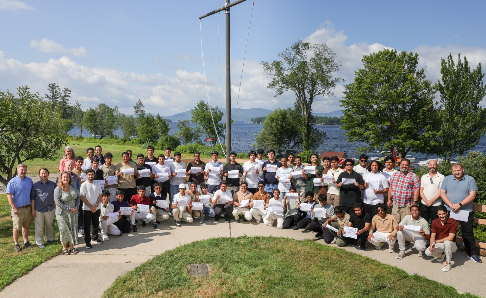

Brewster Academy
International Academic Immersion
During my time at Brewster Academy, I immersed myself in a rigorous preparatory environment that bridged the gap between advanced theory and practical application. I focused intensely on higher-level mathematics and technological integration, utilizing data-driven tools to solve complex academic challenges within a global cohort. This experience was pivotal in refining my analytical mindset, as it required me to adapt to diverse perspectives while mastering the technical logic and collaborative leadership skills necessary for success in international innovation.
